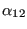
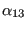

Keyword type: step
This procedure is used to perform a static analysis. The load consists of the sum of the load of the last *STATIC step and the load specified in the present step with replacement of redefined loads.
There are five optional parameters: SOLVER, DIRECT, EXPLICIT, TIME RESET and TOTAL TIME AT START. SOLVER determines the package used to solve the ensuing system of equations. The following solvers can be selected:
Default is the first solver which has been installed of the following list: SGI, PaStiX, PARDISO, SPOOLES and TAUCS. If none is installed, the default is the iterative solver, which comes with the CalculiX package.
The SGI solver should by now be considered as outdated.SPOOLES is very fast, but has no out-of-core capability: the size of systems you can solve is limited by your RAM memory. With 32GB of RAM you can solve up to 1,000,000 equations. TAUCS is also good, but my experience is limited to the  decomposition, which only applies to positive definite systems. It has an out-of-core capability and also offers a  decomposition, however, I was not able to run either of them so far. PARDISO is the Intel proprietary solver and is about a factor of two faster than SPOOLES. The most recent solver we tried is the freeware solver PaStiX from INRIA. It is really fast and can use the GPU. For large problems and a high end Nvidea graphical card (32 GB of RAM) we got an acceleration of a factor between 3 and 8 compared to PARDISO. We modified PaStiX for this, therefore you have to download PaStiX from our website and compile it for your system. This can be slightly tricky, however, it is worth it!
What about the iterative solver? If SOLVER=ITERATIVE SCALING is selected, the pre-conditioning is limited to a scaling of the diagonal terms, SOLVER=ITERATIVE CHOLESKY triggers Incomplete Cholesky pre-conditioning. Cholesky pre-conditioning leads to a better convergence and maybe to shorter execution times, however, it requires additional storage roughly corresponding to the non-zeros in the matrix. If you are short of memory, diagonal scaling might be your last resort. The iterative methods perform well for truly three-dimensional structures. For instance, calculations for a hemisphere were about nine times faster with the ITERATIVE SCALING solver, and three times faster with the ITERATIVE CHOLESKY solver than with SPOOLES. For two-dimensional structures such as plates or shells, the performance might break down drastically and convergence often requires the use of Cholesky pre-conditioning. SPOOLES (and any of the other direct solvers) performs well in most situations with emphasis on slender structures but requires much more storage than the iterative solver.
The parameter DIRECT is relevant for nonlinear calculations only, and indicates that automatic incrementation should be switched off.
The parameter EXPLICIT is only important for fluid computations. If present, the fluid computation is explicit, else it is semi-implicit. Static structural computations are always implicit.
The parameter TIME RESET can be used to force the total time at the end of the present step to coincide with the total time at the end of the previous step. If there is no previous step the targeted total time is zero. If this parameter is absent the total time at the end of the present step is the total time at the end of the previous step plus the time period of the present step (2nd parameter underneath the *STATIC keyword). Consequently, if the time at the end of the previous step is 10. and the present time period is 1., the total time at the end of the present step is 11. If the TIME RESET parameter is used, the total time at the beginning of the present step is 9. and at the end of the present step it will be 10. This is sometimes useful if thermomechanical calculations are split into transient heat transfer steps followed by quasi-static static steps (this can be faster than using the *COUPLED TEMPERATURE-DISPLACEMENT option, which forces the same amount of iterations for the thermal as for the mechanical calculations and than using the *UNCOUPLED TEMPERATURE-DISPLACEMENT option, which forces the same amount of increments for the thermal as for the mechanical calculations). In CalculiX the static step needs a finite time period, however, the user frequently does not want the quasi-static step to change the time count.
Finally, the parameter TOTAL TIME AT START can be used to set the total time at the start of the step to a specific value.
In a static step, loads are by default applied in a linear way. Other loading patterns can be defined by an *AMPLITUDE card.
If nonlinearities are present in the model (geometric nonlinearity or material nonlinearity), the solution is obtained through iteration. Since the step may be too large to obtain convergence, a subdivision of the step in increments is usually necessary. The user can define the length of the initial increment. This size is kept constant if the parameter DIRECT is selected, else it is varied by CalculiX according to the convergence properties of the solution. In a purely linear calculation the step size is always 1., no iterations are performed and, consequently, no second line underneath *STATIC is needed.
Notice that any creep behavior (e.g. by using the keyword *CREEP) is switched off in a *STATIC step. To include creep use the *VISCO keyword. The syntax for both keywords is the same.
First line:
Example: *STATIC,DIRECT .1,1.
defines a static step and selects the SPOOLES solver as linear equation solver in the step (default). If the step is a linear one, the other parameters are of no importance. If the step is nonlinear, the second line indicates that the initial time increment is .1 and the total step time is 1. Furthermore, the parameter DIRECT leads to a fixed time increment. Thus, if successful, the calculation consists of 10 increments of length 0.1.
Example files: beampic, beampis.